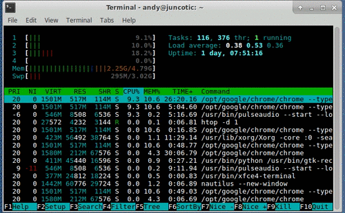

La capacitacion de informatica te da muchos beneficios, entre poder hacer paginas web.
Estos se benefician en poder hacer sus propias paginas web y a la vez como subir una pagina al internet.

Tambien pueden promocionar sus empresas, negocios y incluso escuelas de aprendizaje basico hasta danza.
https://www.todamateria.com/que-es-informatica/
https://www.informatica.us.es/index.php/conoce-tu-futura-escuela/la-informatica
EQUIPO: POWER RANGERS
14/04/2020